### 【悲報】量子コンピュータ、九九が解けない <p>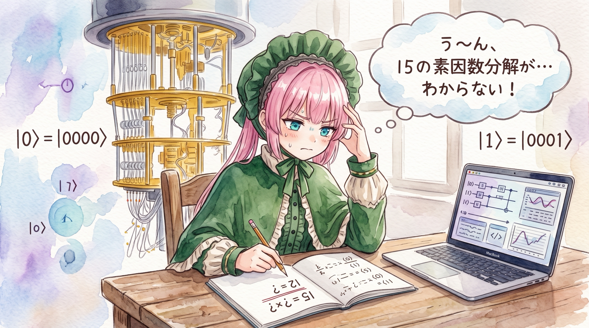</p> --- ### 自己紹介 <div class="profile-container"> <div class="profile-left"> * さめ(мег-сск) * ⚛️ VRChat物理学集会の主催 * 🧑🎓 社会人学生として通信制大学在学中 * 得意分野: * 📸 コンピュータビジョン (画像認識/点群処理) * 🌍 空間情報処理 (地理情報/リモートセンシング) * ☁️ クラウドインフラ設計/IaC (AWS, GCP) * 学生時代は地球物理学を専攻 * 地球観測技術のエンジニアとして活動中 </div> <div class="profile-right"> </div> </div> --- ### 量子コンピュータの噂 <div class="simple-box"> * **素因数分解**: 数を素数の掛け算に分けること * 例: 15 = 3 × 5 * 掛け算は一瞬。でも**逆向きは難しい** * 巨大な素数 2 つを掛けた数 (例えば 617 桁) を分解するのは、 今のコンピュータでは現実的な時間で終わらない </div> <br> <div class="highlight-box"> 「量子コンピュータなら、巨大な数の素因数分解も**あっという間に解ける**」と言われている </div> --- ### RSA 暗号と素因数分解 <div class="simple-box"> * **RSA 暗号**: Web の HTTPS (サーバ証明書の署名) などで広く使われている * 鍵の材料は巨大な合成数 $N = p \times q$ * $N$ は**全世界に公開**、素因数 $p$ と $q$ は**秘密** * $N$ を素因数分解できれば、暗号は破れる </div> <br> <div class="highlight-box"> * 安全性の根拠: 古典コンピュータで**効率よく素因数分解する方法が見つかっていない**こと * 「不可能」と証明されたわけではない </div> --- ### 量子で暗号が破られる？ <div class="simple-box"> * **正当な部分** * Shor のアルゴリズムは RSA を**原理的には**破れる * 今の通信を保存して将来解読される心配がある * 耐量子暗号への移行が始まっている (米国 NIST が 2024 年に標準化) * **まだ先の部分** * 2048 bit の RSA には、誤りのある qubit が**約 100 万個**必要 (2025 年の見積もり) * 今日使う実機は **20 qubit** </div> --- ### 実は、誰でも借りられる <div class="two-column"> <div class="column-left" style="flex: 2;"> <div class="simple-box"> * **Amazon Braket** (AWS) で本物の量子コンピュータを使える * 例: **IQM Garnet** (超伝導、20 qubit) * 実行 1 回 0.30 USD + 1 ショット 0.00145 USD * 3000 ショットで **4.65 USD** </div> </div> <div class="column-right"> <p>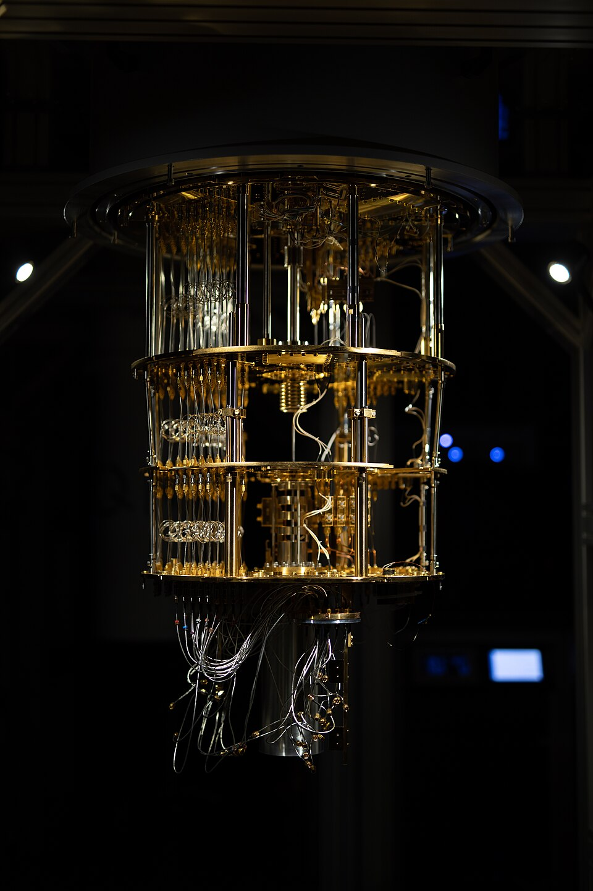</p> <p class="caption" style="font-size: 0.5em; white-space: nowrap;">写真: Ragsxl, CC BY-SA 4.0,<br>via Wikimedia Commons</p> </div> </div> <div class="highlight-box"> 月 100 USD の予算で、噂のすごいやつを**自分の手で動かしてみたい** </div> --- ## じゃあ、お金を払えば ## 巨大な数も分解できる？ --- ### ところがどっこい ## 15 = 3 × 5 すら ## 解けませんでした <br> <div class="highlight-box"> 正確に言うと: 正しい答えに辿り着く割合で、**でたらめな数を返すだけの装置 (サイコロ) に負けた** (実機 69.5% 対 サイコロ 75%) </div> --- ### 今日話すこと <div class="simple-box"> * 素因数分解の量子アルゴリズム **Shor のアルゴリズム**を、 **本物の量子コンピュータ**で動かしてみた話 * 題材は 15 = 3 × 5 (2001 年の最初の実験以来の定番) * 超伝導量子コンピュータ **IQM Garnet** にクラウド経由で投げる * 結果を**事前に書いておいた予測**と比べる </div> <div class="highlight-box"> * **どう、どれだけうまくいかなかったか**を数字で確かめる * **排出率0\%のガチャ**を回して爆死してしまったのを笑いのネタにして成仏させる </div> --- ### 今日話さないこと <div class="simple-box"> * 量子誤り訂正、RSA 暗号がいつ破られるか * 量子計算や Shor のアルゴリズムの厳密な説明 * 位相推定や連分数展開の証明 * クラウド側のインフラ設計 * 権限の分離、課金のガードレール、Terraform * ぶっちゃけるとここに一番手間と時間がかかってるのですが…… </div> <br> <div class="highlight-box"> 実装と判断の記録は GitHub のリポジトリと Wiki で公開 (最後にリンク) </div> --- ## 量子コンピュータは何が違う？ ### 超ざっくり版 --- ### 古典コンピュータのゲート <div class="simple-box"> * **ビット** (0 か 1) を**論理ゲート**で変換する * 例: **NAND** は「両方 1 のときだけ 0」 * NAND を組み合わせれば、**どんな計算も作れる** <table> <thead> <tr><th>入力 A</th><th>入力 B</th><th>A NAND B</th></tr> </thead> <tbody> <tr><td>0</td><td>0</td><td>1</td></tr> <tr><td>0</td><td>1</td><td>1</td></tr> <tr><td>1</td><td>0</td><td>1</td></tr> <tr><td>1</td><td>1</td><td>0</td></tr> </tbody> </table> </div> <div class="highlight-box"> 2 つ入れて 1 つ出す → 出力 1 から入力は**戻せない** (情報を捨てている) </div> --- ### 量子コンピュータのゲート <div class="simple-box"> * **qubit** は 0 と 1 の**重ね合わせ** $\alpha \lvert 0 \rangle + \beta \lvert 1 \rangle$ を取れる * $\alpha$ と $\beta$ は**振幅**。波の高さと位相のようなもの * **量子ゲート**は振幅を回す操作 * 例: **H ゲート**は $\lvert 0 \rangle$ を 0 と 1 が半々の重ね合わせにする <table> <thead> <tr><th></th><th>古典</th><th>量子</th></tr> </thead> <tbody> <tr><td>単位</td><td>ビット (0 か 1)</td><td>qubit (重ね合わせ)</td></tr> <tr><td>ゲート</td><td>NAND など。入力を捨てる</td><td>H、CNOT など。逆回しできる</td></tr> <tr><td>読み出し</td><td>何度読んでも同じ</td><td>測ると確率的に 0 か 1</td></tr> </tbody> </table> </div> --- ### 測定 1 回 = 1 ショット <div class="simple-box"> * 回路を流して測ると、0 と 1 の列が **1 本**出る。これが **1 ショット** * どの列が出るかは**確率**で決まる * 分布を知るには、**同じ回路を何千回も**流して頻度を数える * ショットが多いほど頻度のばらつきは小さい * 実機は**ショット単位で課金**される </div> <div class="highlight-box"> 返ってくるのは**分布からのサンプル**。分布はショットを重ねてはじめて見える </div> --- ### 重ね合わせと干渉 <div class="simple-box"> * $n$ 個の qubit で、$2^n$ 通りの入力の重ね合わせを**まとめて**扱える * ただし測ると**答えは 1 つだけ** * 「全部同時に計算して全部読む」わけではない * 振幅は波のように**干渉**する * 正解が強め合い、不正解が打ち消し合うように組む </div> <div class="highlight-box"> * この解き方が効く問題は限られている * 一番有名なのが素因数分解の **Shor のアルゴリズム** (1994 年) </div> --- ## Shor のアルゴリズム ### 因数分解を「周期探し」に言い換える --- ### 7 を掛けて 15 で割り続ける <div class="simple-box nowrap-table"> * 15 と共通の約数を持たない数を選ぶ (今回は **7**) * $7^x$ を 15 で割った余り ($7^x \bmod 15$) を計算する * 次の余りは「前の余り × 7」の余り ($4 \times 7 = 28$ → 13) <table> <thead> <tr><th>$x$</th><th>0</th><th>1</th><th>2</th><th>3</th><th>4</th><th>5</th><th>6</th></tr> </thead> <tbody> <tr><td>$7^x$</td><td>1</td><td>7</td><td>49</td><td>343</td><td>2401</td><td>16807</td><td>117649</td></tr> <tr><td>15 で割った余り</td><td><strong>1</strong></td><td>7</td><td>4</td><td>13</td><td><strong>1</strong></td><td>7</td><td>4</td></tr> </tbody> </table> </div> <div class="highlight-box"> 余りは 1 → 7 → 4 → 13 → 1 → … と **4 つごとに繰り返す**。この長さを**周期** $r$ と呼ぶ ($r = 4$) </div> --- ### 隠れた周期を探す <p>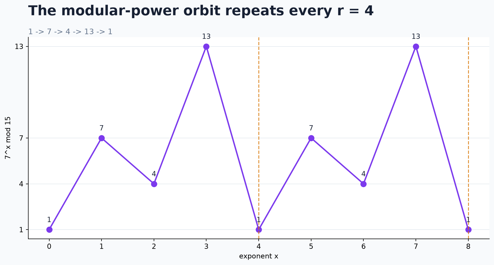</p> <div class="highlight-box"> 因数分解の問題は、この**周期を見つける問題**に言い換えられる (次のスライドから) </div> --- ### 周期から「掛け算の形」を作る <div class="simple-box"> * 周期が 4 → $7^4$ を 15 で割った余りは 1 * つまり $7^4 - 1 = 2400$ は **15 で割り切れる** ($2400 = 15 \times 160$) * 中学で習う因数分解 $A^2 - 1 = (A - 1)(A + 1)$ を、$A = 7^2 = 49$ で使う $$ 7^4 - 1 = (7^2 - 1)(7^2 + 1) = 48 \times 50 $$ </div> <div class="highlight-box"> 15 の倍数を、**2 つの数の掛け算**に分けられた </div> --- ### 48 も 50 も 15 の倍数ではない <div class="simple-box"> * $48 \times 50$ は 15 の倍数。でも 48 も 50 も**単独では違う** * → 15 の素因数が 48 と 50 に**分かれて**いる * 実際 $48 = 3 \times 16$、$50 = 5 \times 10$ * **最大公約数** (gcd) で取り出す $$ \gcd(48,\ 15) = 3, \qquad \gcd(50,\ 15) = 5 $$ </div> <div class="highlight-box"> 15 の素因数を知らなくても、**最大公約数を計算するだけ**で取り出せる </div> --- ### 最大公約数は一瞬で計算できる <div class="simple-box"> * **ユークリッドの互除法**: 割り算の余りを取り続けるだけ。600 桁でも一瞬 → $O(\log \min(a, b))$ * $50 = 3 \times 15 + 5$、$15 = 3 \times 5$ → gcd は **5** * $48 = 3 \times 15 + 3$、$15 = 5 \times 3$ → gcd は **3** * 周期が奇数のときや片方が 15 の倍数のときは失敗 * → 7 以外の数で**やり直す** (適当に選べば半分以上の確率で成功) </div> <div class="highlight-box"> * 難しいのは**周期を見つける**ところ * (理想的な)量子コンピュータはこれが得意 </div> --- ### 量子の担当は「周期探し」だけ <p>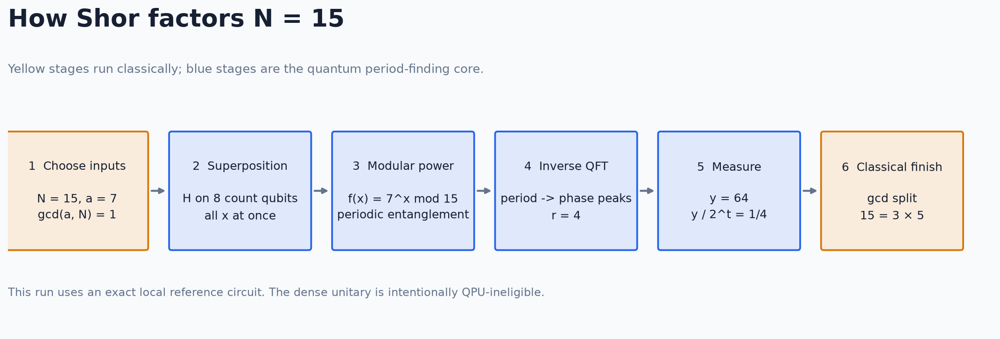</p> <p class="caption">黄: 古典、青: 量子。量子が直接「3 と 5」を出すわけではない</p> <div class="simple-box nowrap-table"> <table> <thead> <tr><th>ステップ</th><th>やること</th><th>量子だと何がうれしいか</th></tr> </thead> <tbody> <tr><td>2: 重ね合わせ</td><td>$x$ = 0〜255 を重ねる</td><td>256 通りを 8 ゲートで</td></tr> <tr><td>3: べき乗の余り</td><td>余り $7^x \bmod 15$ を書く</td><td>全部の $x$ をまとめて</td></tr> <tr><td>4: 逆 QFT</td><td>縞 → ピーク</td><td>干渉で<strong>周期だけ</strong>読む</td></tr> </tbody> </table> </div> --- ### 指数を入れる箱 <div class="figure-crop" style="aspect-ratio: 1984 / 432;"><p>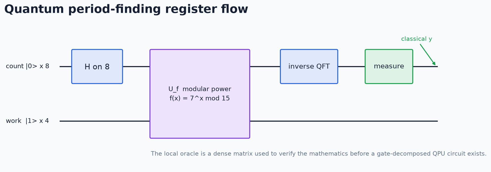</p></div> <div class="simple-box"> * **count** (8 qubit、図の上の線): 指数 $x$ を入れる * 8 qubit で 0〜255 の 256 通り * H → 掛け算のスイッチ → 逆 QFT → **ここを測る** * count / work は実装での呼び名 (教科書では第 1 / 第 2 レジスタ) </div> --- ### 余りを書く箱 <div class="figure-crop" style="aspect-ratio: 1984 / 432;"></div> <div class="simple-box"> * **work** (4 qubit、図の下の線): 余り $7^x \bmod 15$ を書く。最初は 1 * 余りで $x$ を消すと逆回しできない → **別の箱**へ * 2 つの箱の状態は (count, work) の**表**。各マスに**振幅**が乗り、測ると **1 マス**だけ出る </div> <div class="highlight-box"> 量子の仕事: **どのマスを引いても役立つ表**に整える </div> --- ### ステップ 2: 重ね合わせ <div class="figure-crop" style="aspect-ratio: 2088 / 311;"><p>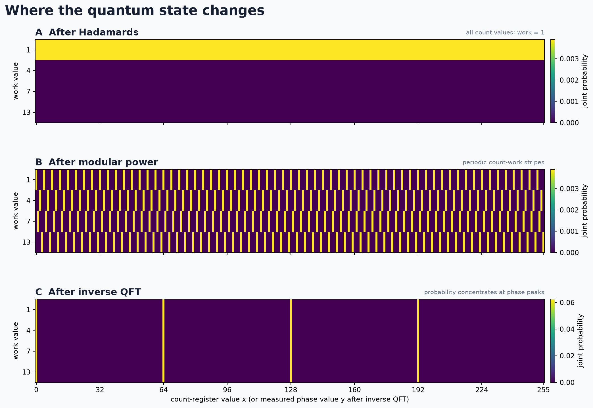</p></div> <p class="caption">横: count の値 $x$ (0〜255)、縦: work の値 (使わない 12 行は省略)。明るいほど確率が高い</p> <div class="simple-box"> * count の 8 qubit に H ゲートを 1 個ずつ * work = 1 の行の **256 マスに同じ振幅** (確率 1/256) * いま測ると 0〜255 のどれかが均等に出る </div> <div class="highlight-box"> * 古典: 256 通り並べるには 256 回か 256 台 * 量子: **ゲート 8 個**で 256 マス。1 qubit 足すと 2 倍 </div> --- ### ステップ 3: べき乗の余り <div class="figure-crop" style="aspect-ratio: 2088 / 310; width: 90%; margin: 10px auto;"></div> <div class="simple-box"> * count の各 qubit を**スイッチ**に、work へ $7, 7^2, 7^4, \dots$ を掛ける * 各マスが余りの行へ → **ずれた 4 つおきの縞** * 2 つの箱の状態を**別々に言えない** → **エンタングルメント** </div> <div class="highlight-box"> いま測っても ($x$, 余り) の組が 1 つ出るだけ。**古典で計算したのと同じ** </div> --- ### ステップ 4: 逆フーリエ変換 <div class="figure-crop" style="aspect-ratio: 2088 / 376; width: 90%; margin: 10px auto;"></div> <div class="simple-box"> * count に**逆量子フーリエ変換** (逆 QFT): 縞の「間隔」をピークの「位置」に変える * 振幅が**干渉**: 0, 64, 128, 192 で強め合い、ほかは打ち消し合う * 縞の**ずれ**は位相に逃げる → **どの行も同じ 4 列** </div> <div class="highlight-box"> 測った値 $y = 64$ → $64 / 256 = 1/4$ → 分母の **4 が周期** </div> --- ### 1 ショット = 光子 1 個 <p>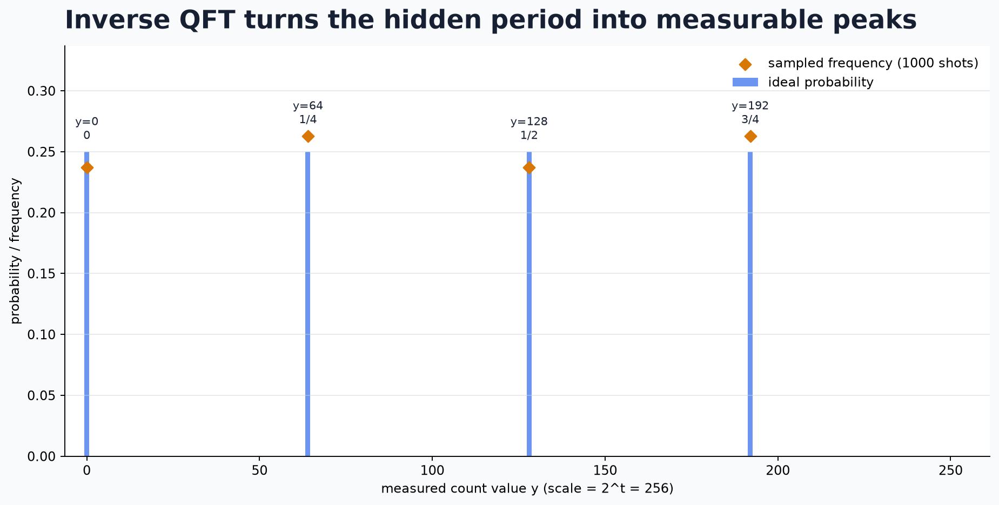</p> <div class="simple-box"> * 1 ショットで出るのは 4 本のどれか **1 つ** * 周期の候補は古典で検算できるので、Shor 自体は**数ショット**で足りる * でも**分布の形**を見るには何千ショットも要る </div> <div class="highlight-box"> 周期構造のフーリエ変換は**回折格子と同じ**。光子 1 個は 1 点に当たるだけで、重ねると縞が見える </div> --- ### なぜ量子だと速いのか <div class="simple-box"> <table> <thead> <tr><th></th><th>古典</th><th>量子 (Shor)</th></tr> </thead> <tbody> <tr><td>周期の探し方</td><td>$7, 7^2, 7^3, \dots$ と順に計算して、1 に戻るまで待つ</td><td>全部の $x$ を重ね合わせ、フーリエ変換で周期だけ読む</td></tr> <tr><td>手間</td><td>周期の長さ程度。617 桁の数では、周期も天文学的な長さになりうる</td><td>回路の大きさは桁数の 3 乗程度</td></tr> </tbody> </table> </div> <div class="highlight-box"> * 表のマス数は qubit 1 個ごとに **2 倍**。12 qubit なら 4096 マスで、ノート PC でも計算できる * 617 桁の数では、表は古典のメモリに**載らない**。qubit は桁数に比例する数で済む </div> --- ### シミュレータでは完璧に動く <div class="simple-box"> * ノイズのないローカルシミュレータ (12 qubit、1000 ショット) * 理想の分布との距離は $3 \times 10^{-16}$ — 数値誤差の範囲で一致 * 測定値から $r = 4$、そして $15 = 3 \times 5$ </div> <br> <div class="highlight-box"> ここまでは教科書どおり。**話が面白くなるのは、実機に載せるところから** </div> --- ## 「15 = 3 × 5 が出た」は ## 成功の証拠になるか？ --- ### 落とし穴①: サイコロでも因数は出る <div class="simple-box"> * 周期の候補が正しいかは**古典計算で検算できる** * → **でたらめな測定値でも、運が良ければ因数に辿り着く** </div> <div class="results-box"> <table> <thead> <tr><th>乱数しか返さない壊れた装置が</th><th>1 回の測定で正解に辿り着く割合</th></tr> </thead> <tbody> <tr><td>一般的な設定</td><td>約 12%</td></tr> <tr><td><strong>今回の実機の設定</strong></td><td><strong>75%</strong></td></tr> </tbody> </table> </div> <div class="highlight-box"> **「因数が出た」を成功の条件にしてはいけない** </div> --- ### 落とし穴②: 答えを回路に埋め込める <div class="simple-box"> * 教科書どおりの回路は、今の実機には大きすぎる * 多くの実機デモは、**答え (周期) を知った上で回路を簡略化**している * 答えを知っていれば、小さな回路で「因数分解」を演出できてしまう * Smolin, Smith, Vargo (2013) の批判 </div> <div class="highlight-box"> このプロジェクトの約束: **回路に入れた手掛かりを必ず記録する** </div> --- ### じゃあ何を測るのか <div class="simple-box"> * 見るのは因数ではなく、**測定結果の分布そのもの** * 実機の分布を「理想」と「乱数」の混合とみなす $$ p_{\mathrm{device}} \approx \lambda \cdot p_{\mathrm{ideal}} + (1 - \lambda) \cdot p_{\mathrm{uniform}} $$ * **信号残存率 $\lambda$**: 1 なら理想、0 なら乱数 </div> <div class="highlight-box"> 実機に投げる前に、**エミュレータで $\lambda$ を予測して書き残す** </div> --- ## 実機に載せる ### 手掛かりとゲート数 --- ### 今の量子コンピュータの制約 <div class="simple-box"> * **ゲートを掛けるたびに誤る** * 2 qubit ゲート 1 回で約 0.3〜2% (候補の 3 機) * **隣どうしの qubit にしか 2 qubit ゲートを掛けられない** (超伝導の格子型) * 教科書どおりの掛け算回路は、15 相手でも**数千ゲート** </div> <br> <div class="highlight-box"> 誤りが積もると、残る信号は $e^{-10} \approx 5 \times 10^{-5}$ 程度。**乱数と区別できない** </div> --- ### 手掛かり①: $15 = 2^4 - 1$ <div class="simple-box"> * 4 ビットの数を 2 倍して 15 で割った余り = **ビットを 1 つ左に回すだけ** * あふれた最上位ビットが最下位に戻る ($15 = 1111_2$) * 7 倍は「3 ビット回して、全ビット反転」 * 例: $0001 \to 1000 \to 0111$ (1 × 7 = 7) * 掛け算が**ビットの入れ替えと反転だけ**で書ける </div> <div class="highlight-box"> 数千ゲート → **2 qubit ゲート 46 個**。ただし **15 にしか使えない**専用回路 </div> --- ### 手掛かり②: 精度を切り詰める <p>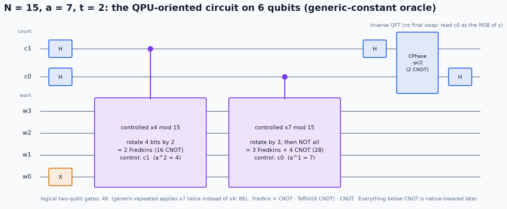</p> <div class="highlight-box"> * count を **2 qubit** に (教科書の推奨は 9)。合計 **6 qubit** * 「周期は 4 以下」と知っているからできる選択 * 手掛かりを 2 つ使った以上、**この実験は「因数分解」ではない** </div> --- ### 格子に載せると回路が倍になる <p>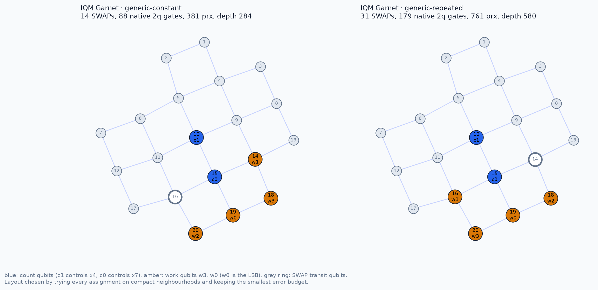</p> <div class="highlight-box"> * IQM Garnet (左が今回の回路)。ゲートは**線で結ばれた隣どうしだけ** * 離れた qubit は入れ替えて運ぶ → 2 qubit ゲート **46 → 88 個** </div> --- ### 残る信号を事前に見積もる <p>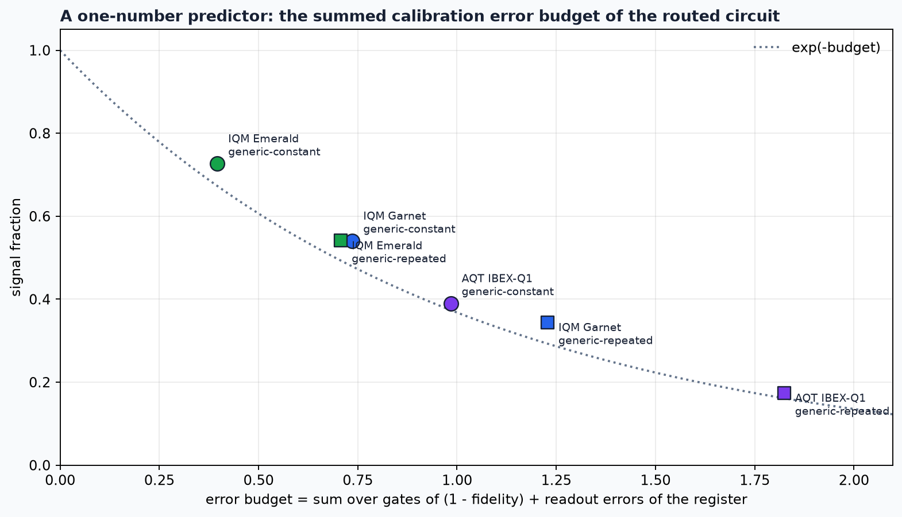</p> <div class="simple-box"> * 回路が使う全ゲートの誤り率の合計 = **誤り予算 $B$** * 残る信号はおよそ $\lambda \approx e^{-B}$ </div> --- ### エミュレータの予測 <div class="results-box nowrap-table"> <table> <thead> <tr><th>機械</th><th>方式</th><th>ゲート数</th><th>予測 $\lambda$</th><th>測定 1 回</th></tr> </thead> <tbody> <tr><td>IQM Emerald</td><td>超伝導 54 qubit</td><td>91</td><td>0.73</td><td>0.00160 USD</td></tr> <tr><td><strong>IQM Garnet</strong></td><td>超伝導 20 qubit</td><td><strong>88</strong></td><td><strong>0.54</strong></td><td><strong>0.00145 USD</strong></td></tr> <tr><td>AQT IBEX Q1</td><td>イオントラップ 12 qubit</td><td>46</td><td>0.39</td><td>0.02350 USD</td></tr> </tbody> </table> </div> <p class="caption">ゲート数は 2 qubit ゲートの個数。2026-09-13 時点の校正データによる予測</p> <div class="highlight-box"> * 一番短い回路 (IBEX) が一番良いとは限らない * **安くてやり直しのきく Garnet から始める** </div> --- ### お金を溶かさない仕組み <div class="simple-box"> * 実機は**課金される**: 3000 回の測定で 4.65 USD * シミュレータの検証を通った回路**だけ**を投げられる仕組みを自作 * クラウド側にも支出の上限と権限の分離を設定 </div> <br> <div class="highlight-box"> 余談: 最初の 1 回は、**自分で作った安全装置に自分が止められた** (課金なし) </div> --- ## 実機の結果 ### IQM Garnet、3000 ショット --- ### 実行条件 <div class="results-box"> <table> <tbody> <tr><td>デバイス</td><td><strong>IQM Garnet</strong> (超伝導、20 qubit)</td></tr> <tr><td>実行日</td><td>2026-09-23</td></tr> <tr><td>回路</td><td>$N = 15$、底 7、count 2 + work 4 = 6 qubit</td></tr> <tr><td>2 qubit ゲート / 深さ</td><td>88 / 284</td></tr> <tr><td>測定回数 (ショット)</td><td>3000</td></tr> <tr><td>投入から完了まで</td><td>約 3 秒</td></tr> <tr><td>費用</td><td>4.65 USD</td></tr> </tbody> </table> </div> --- ### 結果: 縞は見えるが、薄い <p>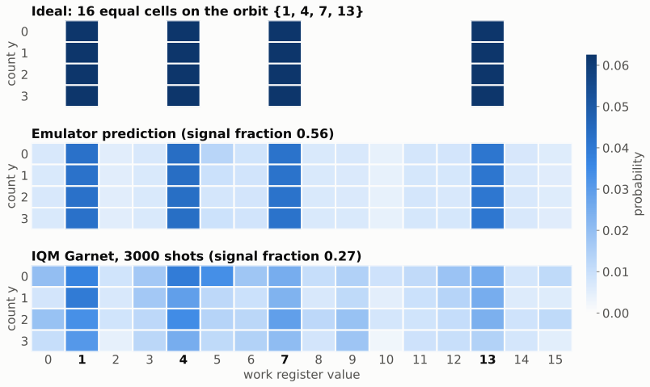</p> <p class="caption">上: 理想 (4 本の縦縞) / 中: エミュレータの予測 / 下: 実機</p> --- ### 数字で見ると <div class="results-box"> <table> <thead> <tr><th>指標</th><th>実機</th><th>予測</th></tr> </thead> <tbody> <tr><td><strong>信号残存率 $\lambda$</strong></td><td><strong>0.272 ± 0.012</strong></td><td>0.564</td></tr> <tr><td>work が正しい 4 値に乗った割合</td><td>0.454</td><td>0.673</td></tr> <tr><td>正しい周期に辿り着く割合</td><td>0.695</td><td>0.745</td></tr> <tr><td>(参考) 乱数しか返さない装置の同じ割合</td><td colspan="2">0.750</td></tr> </tbody> </table> </div> <div class="highlight-box"> * 信号は**ある** (ゼロから 22σ)。でも予測の**半分以下** (予測から 24σ) * 「周期に辿り着く割合」は**乱数以下**だった </div> --- ### まず解析ミスを疑う <p>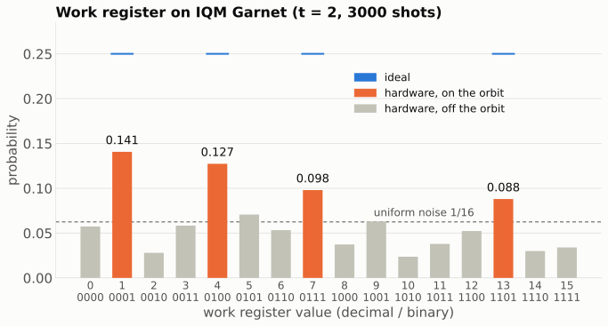</p> <div class="highlight-box"> * 上位 4 値は 1, 4, 7, 13 — **理想の 4 値そのもの** * 外れた値の大半は、正しい値から **1 ビットだけ反転** * 配線や解析の取り違えではない。**本当に信号が弱い** </div> --- ### 偏りに気づく <div class="simple-box"> * **1 のビットが少ない値ほど出やすい** * work: 1 (0001) と 4 (0100) が、7 (0111) と 13 (1101) より多い * count: 00 が 0.305、11 が 0.203 * qubit が $\lvert 1 \rangle$ から $\lvert 0 \rangle$ に**落ちている**ように見える </div> <br> <div class="highlight-box"> エネルギー緩和の匂い。**エミュレータのノイズモデルには入っていなかった** </div> --- ### T1 と T2: 量子ビットの「寿命」 <div class="simple-box"> * **T1 (エネルギー緩和)**: $\lvert 1 \rangle$ が $\lvert 0 \rangle$ に落ちるまでの時間 * **T2 (位相緩和)**: 重ね合わせの**位相**が乱れるまでの時間 * NMR の縦緩和・横緩和と同じ概念 * 今回使った qubit の T2 は **5.6〜28 µs** * 回路全体は**約 6〜11 µs** (ゲート時間は仮定) </div> <div class="highlight-box"> ゲートを受けずに**待っている qubit** が、待っているあいだに崩れていく </div> --- ### 待機中の減衰を予測に足す <p>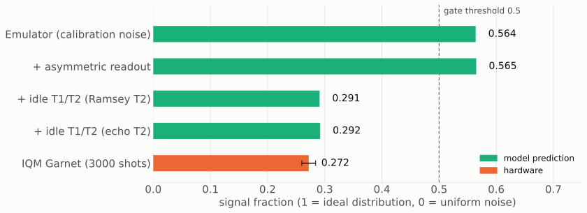</p> <div class="highlight-box"> * 読み出し誤りの偏り → **効かない** * 待機中の T1/T2 → 予測が **0.29** に下がり、偏りも再現 * ゲート時間は**仮定**。これは**示唆**であって証明ではない </div> --- ## 一番大事な気づき ### 測っていたのは「量子らしさ」ではなかった --- ### この数字は何を測っていたのか <div class="simple-box nowrap-table"> <table> <thead> <tr><th>count の値 $x$</th><th>0</th><th>1</th><th>2</th><th>3</th></tr> </thead> <tbody> <tr><td>掛け算のあとの work</td><td>1</td><td>7</td><td>4</td><td>13</td></tr> </tbody> </table> * count 2 qubit では、work の値が**全部違う** * work が $x$ を記録している = **どのスリットを通ったか分かる**二重スリット * 理想の分布は、**count を途中で測った場合とまったく同じ** </div> <div class="highlight-box"> count の重ね合わせが壊れていても**同じ分布**が出る。 $\lambda$ が見ていたのは**掛け算回路の出来**だけ </div> --- ### 15 という数の特殊性 <div class="simple-box"> * 15 を法とする周期は **1, 2, 4 だけ** — 全部 2 のべき * 2 のべきの周期は、2 進数の count で**ぴったり割り切れる** * 干渉で「惜しい値を打ち消す」出番がない * 干渉を見るには、周期が 2 のべきでない数が要る * 例: $N = 21$ (底 2 の周期は 6) </div> <br> <div class="highlight-box"> 「15 の因数分解」は、量子アルゴリズムの検証としては**甘い問題**だった </div> --- ### 追加実験: 位相は保たれているか <div class="simple-box"> * 増やした 1 qubit は、重ね合わせのまま**待機するだけ** * 位相を保てていれば、測定値は**偶数だけ** (0, 2, 4, 6) * 位相が壊れていれば、奇数も同じだけ出る * **可視度** = 偶数の割合 − 奇数の割合 (理想 1、壊れると 0) </div> <div class="highlight-box"> 事前の予測: エミュレータ **0.83** / 待機の減衰を足すと **0.25〜0.42** </div> --- ### 結果: 奇数がほぼ同じだけ出た <p>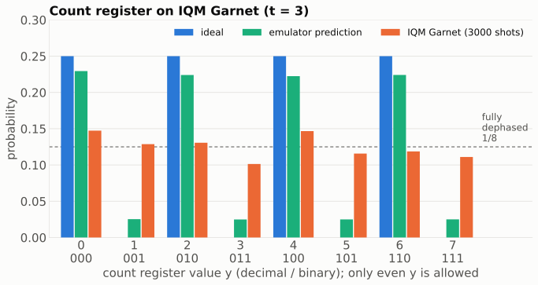</p> <p class="caption">青: 理想 (偶数だけ) / 緑: エミュレータの予測 / 橙: 実機 (同日、3000 ショット、4.65 USD)</p> --- ### どちらの予測も外れた <p>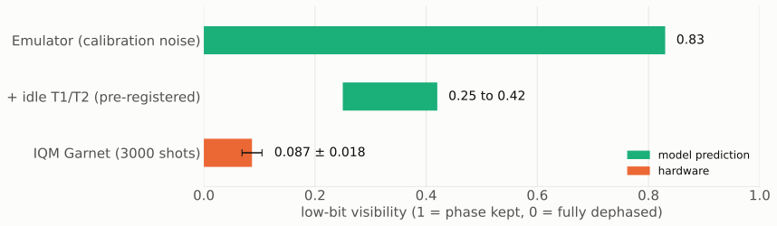</p> <div class="simple-box"> * 可視度 **0.087 ± 0.018** * 待機していた qubit は、回路のあいだに**ほぼ完全に位相を失った** </div> --- ### 何が起きていたのか <div class="simple-box"> 1. **置き場所が悪かった** * 待機 qubit は、8 個のうち **T2 が最短 (5.6 µs)** の場所にいた * 自作の配置プログラムはゲートの誤り率しか見ていなかった 2. **それでも予測 (0.25) より悪い** * 候補: **隣の qubit で動くゲートが位相を乱す** (未検証) </div> <div class="highlight-box"> カタログ値の T2 は、動いている回路の中での**上限**でしかない </div> --- ## 振り返り --- ### かかった費用 <div class="results-box"> <table> <thead> <tr><th>実行</th><th>測定回数</th><th>費用</th></tr> </thead> <tbody> <tr><td>経路確認 (1 回目は権限設定で拒否)</td><td>10</td><td>0.31 USD</td></tr> <tr><td>本測定 (count 2 qubit)</td><td>3000</td><td>4.65 USD</td></tr> <tr><td>追加実験 (count 3 qubit)</td><td>3000</td><td>4.65 USD</td></tr> <tr><td><strong>合計</strong></td><td></td><td><strong>9.61 USD</strong></td></tr> </tbody> </table> </div> <div class="highlight-box"> 見積りとサービス側の集計の差は 1 セントもなかった </div> --- ### 9.61 ドルで分かったこと <div class="simple-box"> * 校正データだけのエミュレータは、実機の誤りを**約 2 倍過小評価**した * 欠けていたのは**待機中のデコヒーレンス** * 15 相手では、測れるのは「掛け算回路の出来」と「待機 qubit の位相」まで * 待機 qubit は、カタログ値の T2 より速く位相を失う </div> <br> <div class="highlight-box"> どれも**実機を通さなければ見えなかった** </div> --- ### 先行事例と比べると <div class="simple-box"> * Amazon Braket での公開事例を調べた (2026-09-23 時点) * AWS 公式の教材は**シミュレータ**での実行 * 実機の例は、回路の一部か、**答えを使って簡略化した回路** * 教材の回路は実機向けの**変換の段階で失敗**、という報告も </div> <div class="highlight-box"> 今の実機で Shor がうまくいかないのは**主流の結果**。 今回は**自分の数字で確かめた** </div> --- ### 続けない判断と、次の一手 <div class="simple-box"> * 実機はここで**一区切り** * 予測が実測を説明できないまま投げても「またずれた」で終わる * 先にオフライン (無料) でやること * 配置プログラムに「待機時間と T2」を入れる * 隣のゲートの影響をモデルに入れる * 次の実験の候補: **CHSH 不等式** * 2 qubit と数ゲートで、エンタングルメントの質を直接測る </div> --- ### 完走した感想 <div class="simple-box"> * **「うまくいかない」を数字で踏む**のは、思ったより楽しい * **測る前に予測を書いておく**と、外れ方から学べる * 「何を測っているつもりか」は、**測ったあとで**ひっくり返ることがある * 誤り訂正なしで回路を深くする難しさを、**10 ドルで体感**できた </div> <br> <div class="highlight-box"> 実機を作り、動かし、毎日校正している**プロのスゴ味**も味わった </div> --- ### まとめ <div class="simple-box"> 1. Shor の周期発見回路 (15 専用) を超伝導量子コンピュータで実行 2. 信号残存率は **0.27** (予測 0.56)。主因は待機中のデコヒーレンス 3. しかも 15 相手では、その数字は**量子的な干渉を見ていなかった** 4. 待機 qubit の位相は**ほぼ完全に失われていた** (可視度 0.09) </div> <div class="highlight-box"> 「15 = 3 × 5 が出た」は何の証拠にもならない。**何を測ったのかを問い続ける** </div> --- ### 詳しく知りたい方へ <div class="simple-box"> * 実装と記録: [github.com/s-sasaki-earthsea-wizard/shor-braket](https://github.com/s-sasaki-earthsea-wizard/shor-braket) * Wiki の読み物 * [図で追う Shor のアルゴリズム](https://github.com/s-sasaki-earthsea-wizard/shor-braket/wiki/Shor-Algorithm-Visual-Walkthrough) * [N=15 を QPU 互換回路で](https://github.com/s-sasaki-earthsea-wizard/shor-braket/wiki/Shor-N15-on-Local-Emulator) * [実機で最初の 3000 ショット](https://github.com/s-sasaki-earthsea-wizard/shor-braket/wiki/First-Hardware-Run-on-IQM-Garnet) * [Amazon Braket で Shor を動かした先行事例](https://github.com/s-sasaki-earthsea-wizard/shor-braket/wiki/Amazon-Braket-Shor-Prior-Art) * 開発には AI エージェント (Claude Code ほか) を活用 </div> --- ### LT登壇者の募集 <div class="simple-box"> * 物理学集会ではLT登壇者を募集しています！ * どんなジャンルでもOK！ * 興味のある方は物理学集会のDiscordサーバーまで！ </div> --- ## Appendix --- ### Appendix 1: 信号残存率の求め方 <div class="simple-box"> $$ \lambda = \frac{m - f}{1 - f} $$ * $m$: 測定結果が「理想で確率を持つマス」に乗った割合 * $f$: そのマスが全体に占める割合 * 本測定: $m = 0.454$、$f = 16/64$ → $\lambda = 0.272$ </div> --- ### Appendix 2: 6 が縮退している理由 <p>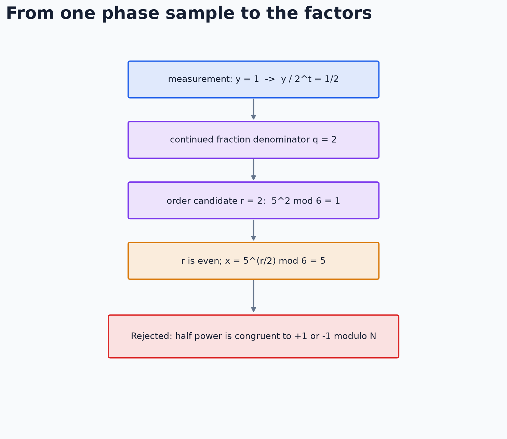</p> <div class="simple-box"> * 周期 2 は得られるが、$5^{1} \equiv -1 \pmod 6$ で棄却される * 片方の gcd から出る 2 は「6 は偶数」と同じ情報 </div> --- ### Appendix 3: 3 機のゲート数 <p>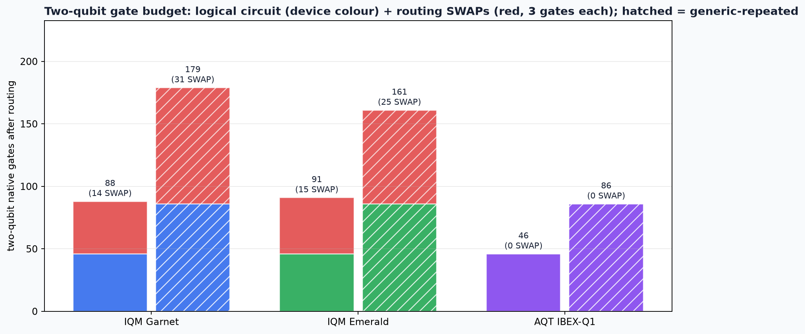</p> <p class="caption">赤が入れ替え (SWAP) による増分。格子型の IQM ではほぼ倍になり、全結合の IBEX ではゼロ</p> --- ### Appendix 4: エミュレータが予測した分布 <p>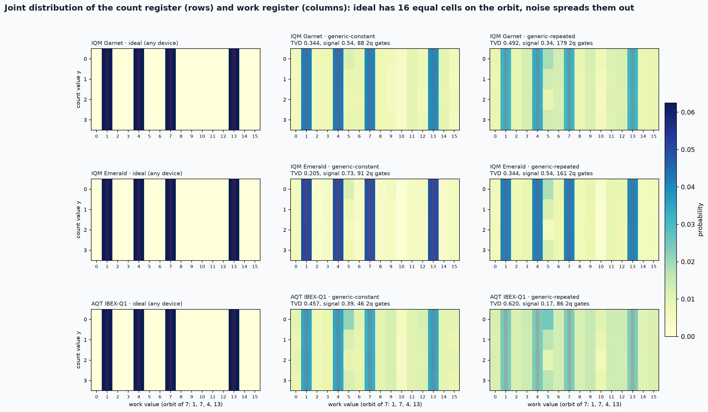</p> <p class="caption">左: 理想 / 中: 今回の回路 / 右: 手掛かりを 1 つ減らした回路</p> --- ### Appendix 5: 論理回路が実機の形になるまで <p>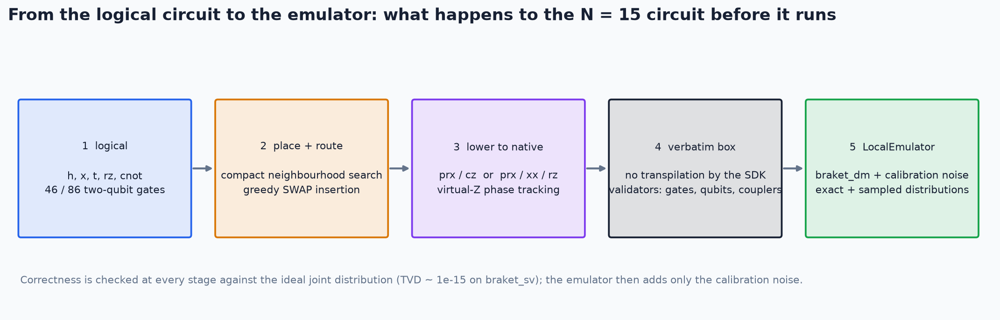</p> <p class="caption">配置と経路探索、機械固有のゲートへの分解は自作。各段階で理想分布との一致を確かめている</p> --- ### Appendix 6: 反復型の位相推定は効かなかった <div class="simple-box"> * 測定結果で次の操作を切り替える方式なら、count を 1 qubit で使い回せる * エミュレータで比べると、$\lambda$ は標準の方式と **±0.03 以内** * IQM Emerald: 0.70 対 0.73 / IQM Garnet: 0.53 対 0.54 * 入れ替えの回数は掛け算の側で決まり、count の数に依らないため </div> --- ### Appendix 7: 自分の安全装置に止められた話 <div class="simple-box"> * 投入は**多要素認証 (MFA) を通した一時的な権限**に限定 * その権限の中では「MFA なし」と判定される仕様だった * 自分で書いた「MFA なしは拒否」のルールが発動 * 事前の検証 22 項目は全部通っていた </div> <div class="highlight-box"> **シミュレータは、与えた前提の下での答えしか返さない** </div> --- ### Appendix 8: 追加実験のモデル比較 <div class="results-box"> <table> <thead> <tr><th>モデル (count 3 qubit)</th><th>可視度</th><th>work の正答率</th></tr> </thead> <tbody> <tr><td>エミュレータ</td><td>0.80</td><td>0.673</td></tr> <tr><td>＋ 待機 T1/T2 (Ramsey T2、20 / 40 ns)</td><td>0.254</td><td>0.461</td></tr> <tr><td>＋ 待機 T1/T2 (Ramsey T2、40 / 80 ns)</td><td>0.099</td><td>0.367</td></tr> <tr><td><strong>実機</strong></td><td><strong>0.087</strong></td><td><strong>0.424</strong></td></tr> </tbody> </table> </div> <p class="caption">括弧内は T2 の種類と、仮定したゲート時間 (1 qubit / 2 qubit)。ゲート時間を伸ばすだけでは両方を同時には説明できない</p> --- ### 参考文献 <div class="simple-box"> * P. W. Shor, SIAM J. Comput. 26, 1484 (1997) * L. M. K. Vandersypen et al., Nature 414, 883 (2001) * J. A. Smolin, G. Smith, A. Vargo, "Oversimplifying quantum factoring", Nature 499, 163 (2013) * C. Gidney, arXiv:2505.15917 (2025) * NIST, FIPS 203 / 204 / 205 (2024) * Bagourd et al., arXiv:2512.15330 * Amazon Braket Algorithm Library, "Shor's Algorithm" notebook </div>